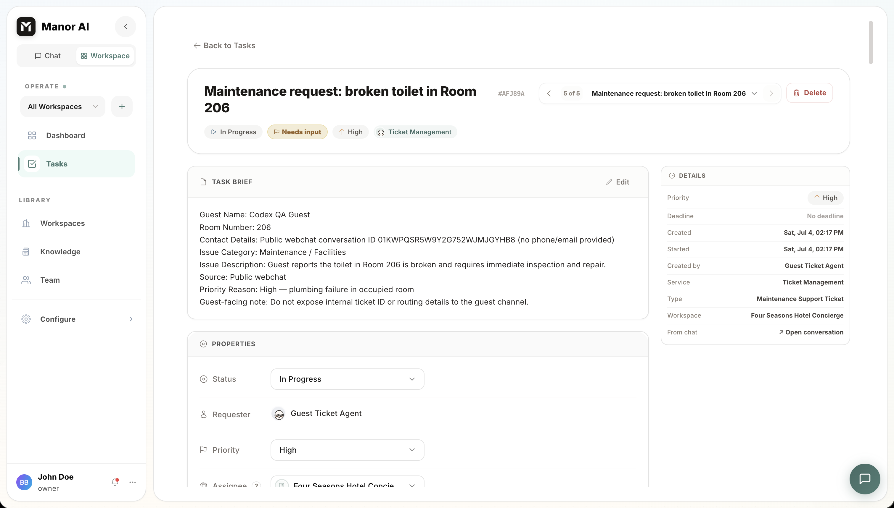
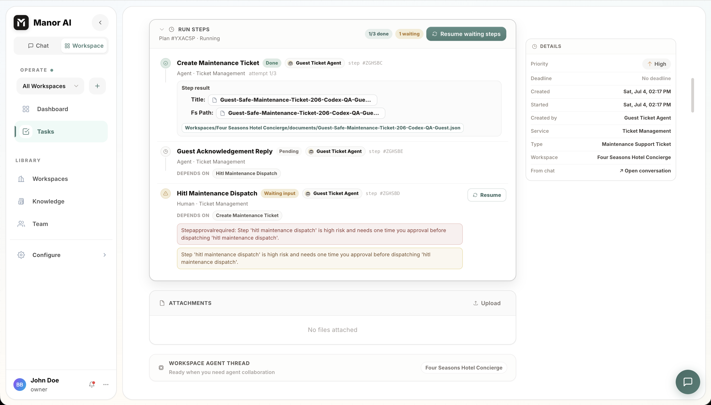

Agent
Agent 是可复用的 AI 工作者，拥有指令、工具访问权限、记忆上下文和运行时治理。
主 Agent 与自定义 Agent
每个部署都有 Manor AI，即主 Agent：默认助手，负责处理开放式聊天、规划多步骤工作，并委派给专家 Agent。当任务或消息没有指定具体 Agent 时，就由主 Agent 来处理。
自定义 Agent 是你定义的专家角色——客服礼宾、研究分析师、记账员。可以从零开始创建（系统提示词、工具、知识），也可以通过 POST /api/v1/agents/generate 从一段自然语言描述生成起点。
在任何聊天输入框中，输入 @ 可将消息路由到指定 Agent；不使用提及时，消息发给主 Agent。映射到工作区服务的 Agent 会自动处理该服务的入站工作。
Agent 包含什么
- 系统指令与行为规则。
- 定义 Agent 可调用内容的工具绑定。
- 可选的技能，用于打包领域专属指令和工作流。
- 模型偏好与路由行为。
- 工作区与用户上下文，以及它积累的记忆。
工具范围
Agent 应当获得能完成其工作的最小工具集。工具范围在运行时强制执行，并展示在 UI 中，便于运营者了解 Agent 被允许做什么。使用 GET /api/v1/agents/{agent_id}/tools 可查看任意 Agent 的实际生效工具。
运行时循环
在会话或任务运行期间，Agent 可以：
- 从会话、工作区、知识工具及其记忆中读取上下文。
- 调用被允许的工具。
- 将子任务委派给另一个 Agent 并使用其结果。
- 为敏感操作请求人工审批。
- 产出用户可见的结果和产物。

执行证据
Agent 的工作在会话结束后仍应可供审查。任务运行会展示计划步骤、步骤输出、生成的产物、等待中的人工输入以及状态变更，让运营者能够了解发生了什么，并从已知状态恢复工作。每次定时或委派的运行还会记录所用轮次、调用的工具和 token 用量。


Agent 在哪里运行
同一套 Agent 循环驱动多个界面：
| 界面 | Agent 的调用方式 |
|---|---|
| 聊天 | 直接对话、@ 提及、悬浮聊天 |
| 任务 | 将任务分配给 Agent；它处理任务并在评论和执行日志中汇报 |
| 工作流 | agent 节点将该循环作为图中的一个步骤运行 |
| 自动化 | 定时任务按 cron 触发 Agent 运行 |
| 渠道 | 入站客户消息路由到映射的 Agent |
良好的 Agent 设计
- 给 Agent 明确的职责归属。
- 只绑定必要的工具。
- 对不可逆操作优先设置显式的人工审批（HITL）要求。
- 保持指令足够简短，便于审计。
- 在大范围使用前，用真实工作流测试 Agent。